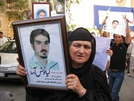

پذيرش > اخبار > حضور ده هزار نفری مردم، بازداشت بيش از ده نفر

 حضور ده هزار نفری مردم، بازداشت بيش از ده نفر حضور ده هزار نفری مردم، بازداشت بيش از ده نفر
17 مرداد 1388 - - نسخه قابل چاپ
مراسم چهلم شهيد كيانوش آسا در كرمانشاه برگزار شد
حضور ده هزار نفری مردم، بازداشت بيش از ده نفر
خبرگزاری ديدبان حقوق بشر كردستان: مراسم چهلم كيانوش آسا، دانشجوی نخبهی كُرد يارسان كه طی وقايع پس از اعلام نتايج انتخابات دهمين دوره رياست جمهوری در جريان تظاهرات اعتراضی روز 25 خرداد ميدان آزادی تهران به شهادت رسيد عصر روز پنجشنبه 15 مرداد به دعوت خانواده وی در تالار عباسيه كرمانشاه برگزار گرديد. در اين مراسم بيش از 10 هزار نفر از شهروندان كرمانشاهی، اساتيد و دانشجويان دانشگاه رازی و علم و صنعت، گروهی از فعالان سياسی و مدنی، تعدادی از اعضای شورای شهر كرمانشاه و نمايندگان سابق استان در مجلس و نيز عدهای از شهرهای تهران، سنندج، اسلام آباد غرب و جوانرود شركت داشتند.
حضور گسترده مردم در اين مراسم به حدی بود كه سالن تالار چندين بار پر و خالی شد و شركت كنندگان برای ورود به تالار مجبور به انتظار طولانی مدت در كوچه و خيابان محل برگزاری مراسم بودند. در گوشهای از سالن تصاويری از كيانوش آسا و ديگر جان باختگان وقايع اخير از جمله ندا آقاسلطان، سهراب اعرابی، اشكان سهرابی و... به نمايش گذارده شده بود. تاج گلهايی نيز مزين به عكس كيانوش آسا از طرف خانواده، دوستان، دانشجويان دانشگاه علم و صنعت، اتحاديه دمكراتيك دانشجويان كُرد، سازمان ادوار تحكيم وحدت، سازمان دفاع از حقوق بشر كردستان و... در محل سالن قرار گرفته بود.

در اين مراسم نخست پيام مهندس ميرحسين موسوی به مناسبت شهادت كيانوش آسا خوانده شد. سپس يكی از شاعران كرمانشاه قطعه شعری را كه برای كيانوش سروده بود قرائت نمود و در پايان كامران آسا برادر كيانوش سخنانی را درباره برادر شهيد خود بيان داشت و بر دادخواهی خون به ناحق ريخته شده كيانوش تأكيد نمود كه سخنان وی مورد تشويق مكرر و ممتد شركت كنندگان قرار گرفت و در اين بين شعارهای الله اكبر، عزا عزاست امروز، میكشم آنكه برادرم كشت به ويژه در قسمت زنان از سوی حاضران سر داده شد اما پس از آن با درخواست خانواده آسا جهت حفظ آرامش، شركت كنندگان تا پايان مراسم سكوت اختيار كردند. اين در حالی بود كه حضور مأموران انتظامی و امنيتی در خارج از سالن و در خيابانهای اطراف تالار از ساعتی پيش از آغاز مراسم و در طول مدت برگزاری آن به صورت گسترده و چشمگير مشهود بود.
با پايان يافتن ساعت مراسم چهلم كيانوش آسا در تالار عباسيه جمعيتی بالغ بر 5 هزار نفر در حالی كه تصاويری از كيانوش، شاخههای گل و شعار نوشتههايی چون "مهژی بو مردن بمره بو ژيان"، "سكوت سرشار از ناگفتههاست" و... در دست داشتند به قصد همراهی خانواده آسا تا درب منزلشان در مسير ميدان شهرداری به سمت خيابان شريعتی شروع به راهپيمايی سكوت كردند. اما در ميانهی راه جمعيت به صورت خودجوش مسير خود را به سمت گورستان باغ فردوس كرمانشاه تغيير دادند تا بر سر مزار كيانوش آسا حاضر شوند. نيروهای انتظامی نيز كه در مسير راهپيمايی صف آرايی كرده بودند هر چند در ابتدا سعی نمودند تا از حركت مردم به سمت باغ فردوس جلوگيری كنند اما جمعيت هزاران نفری مردم توانستند به حركت خود ادامه دهند. در حين عبور مردم از مقابل ساختمان دادسرای عمومی عدهای از جوانان با توقف درب اين ساختمان به صورت سمبليك عكس كيانوش آسا و چند تن ديگر از شهدای وقايع اخير را به اميد دادرسی عادلانه زير تابلوی دادسرای عمومی كرمانشاه به نمايش گذاشتند.
در ادامهی راهپيمايی هزاران نفری مردم كرمانشاه به سمت باغ فردوس برای حضور بر سر مزار كيانوش آسا وقتی جمعيت به انتهای خيابان ثبت رسيدند مأموران انتظامی با مسدود نمودن خيابان و گفتوگو با خانواده آسا مانع از ادامهی راهپيمايی شدند. در نتيجه گروهی از مردم متفرق و گروهی ديگر با ماشينهای سواری و مينیبوسهای كرايه خود را به باغ فردوس رساندند و رفته رفته بر تعداد حاضران افزوده شد تا آنجا كه جمعيتی هزاران نفری بر سر مزار كيانوش گرد هم آمدند و با تنبورنوازی يكی از دوستان و نيز يكی از بستگان كيانوش مردم نيز به همخوانی بخشهايی از سرودهای آئينی اهل حق (يارسان) پرداختند.
در پايان اين مراسم زمانی كه برادر بزرگ كيانوش آسا به نمايندگی از خانواده برای اعلام تشكر از حضور مردم به سخنرانی پرداخت و درباره كيانوش و شهادت او سخنانی را بيان داشت مورد حملهی چند تن از مأموران پليس حاضر در محل به قصد بازداشت قرار گرفت كه مردم مانع از دستگيری وی شدند. اما اين عمل باعث متشنج شدن فضای مراسم شد و به دنبال آن مأموران انتظامی با حمله به مردم معترض و استفاده از گاز فلفل و باتوم برای متفرق نمودن آنها به ضرب و شتم شركت كنندگان در مراسم پرداختند و اقدام به بازداشت حداقل 10 نفر از آنان نمودند.
هر چند مردم با مقاومت خود مانع از دستگيری برادر كيانوش شدند اما دو تن ديگر از بستگان خانواده آسا جزو بازداشت شدگان هستند. در جريان حملهی نيروهای انتظامی نيز با تعدادی از افراد اين خانواده عزادار برخوردهای خشونت آميزی صورت گرفت و حتی به صورت زخمی از شيون مادر و خواهران كيانوش اسپری فلفل پاشيده شد.
ارسال به
بالاترین
،
توییتر
،
فریندفید
،
فیسبوک
در همين بخش :
 پروین ذبیحی برنده جایزه حقوق بشری سازمان غيردولتى اتريشى سودويند شد پروین ذبیحی برنده جایزه حقوق بشری سازمان غيردولتى اتريشى سودويند شد
پخش کارت پستال و بروشور در روز جهانی زن در تهران
تمدید زمان برای امضای بیانیهی جمعی از فعالان زن به مناسبت هشت مارس
مجوزی که در نطفه خفه شد
بیش از 2000 امضا در اعتراض به تبعیض های آموزشی به مجلس تحویل داده شد
ديگر بخش ها :
طرح یک میلیون امضا
|
مقالات
|
سایت نوشته ها
|
اخبار
|
گزارش كمپين
|
گفت و گو
|
علیه سکوت
|
كوچه به كوچه
|
نامه های شما
|
گزارش ویژه
|
گفتگو با اعضا
|
ویژه سالگرد کمپین
|
تصویر برابری
|
دل آرام علی
|
تریبون
|
مقالات
|
تاریخ شفاهی
|
خارج از چارچوب
|
کتابخانه
|
درباره کمپین
|
کمپین در شهرها
|
کمپین در بند
|
صدای تغییر
|
ویژه 22 خرداد
|
لایحه حمایت از خانواده
|
گالری
|
عشا مومنی
|
امیر یعقوبعلی
|
خدیجه مقدم
|
راحله عسگری زاده و نسیم خسروی
|
پروین اردلان،جلوه جواهری، مریم حسین خواه، ناهید کشاورز
|
زینب پیغمبرزاده
|
سعیده امین، سارا ایمانیان، محبوبه حسین زاده، ناهید کشاورز و همایون نامی
|
احترام شادفر
|
نسیم سرابندی زاده،فاطمه دهدشتی
|
وبلاگ مهمان
|
پرونده خرم آباد
|
دستگیری ها
|
مریم مالک
|
پرستو اللهیاری
|
مهرنوش اعتمادی
|
سمیه رشیدی
|
Other Languages
|
همراهان
|
«فراخوان کمپین ده روز با بهاره هدایت»
| English
|